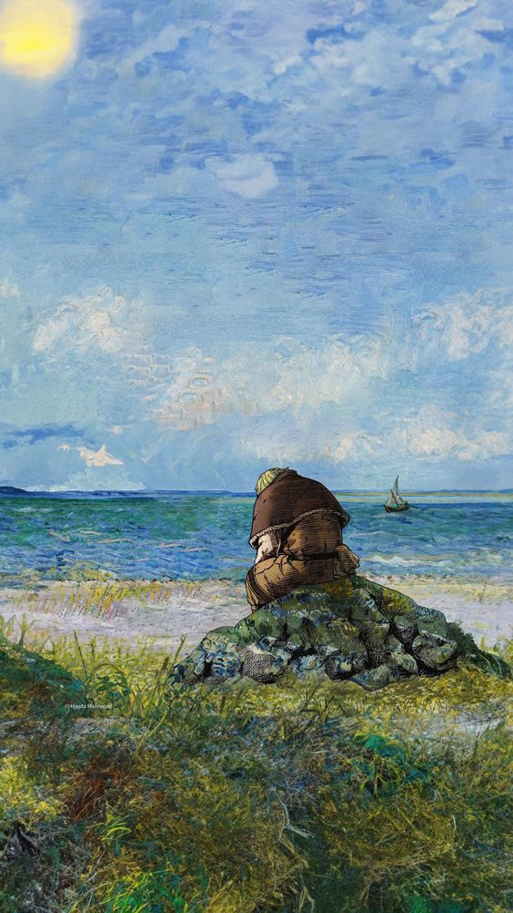
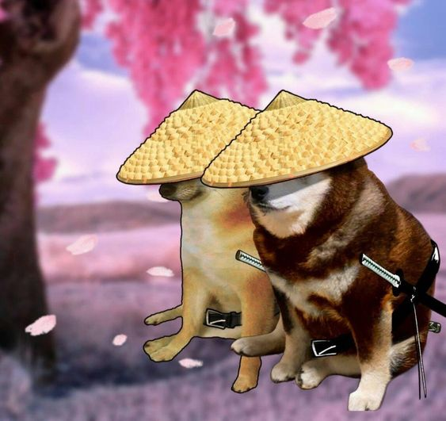

Mi Bio
Datos Personales
- Mi nombre es Gerardo Burgos
- Tengo 22 años
- Estudio sistemas informáticos
- Soy de Tarija
- Me gusta el LoL

Soy una persona muy tranquila pero a la vez muy curiosa. Me gustan los deportes de contacto, los videojuegos, y todo lo que sea friki. Empecé a estudiar programación porque me llamó mucho la atención saber cómo funcionan las cosas y el porqué. En este momento, estoy estudiando sobre desarrollo móvil y aprendiendo Kotlin.
g
